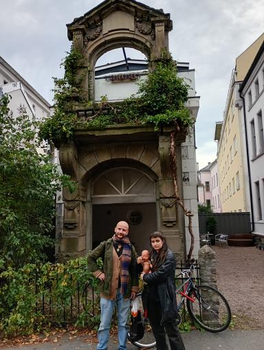

Sagaen om Enoch Marximillian Vassdram
Han ble døpt Enoch Marximillian Vassdram juni 2025 i kjelleren på bolteløkka skole.


født av to stolte skinhead foreldre, han var en solstråle i en forløyet verden kalt oslo. dette bildet er et av enochs eneste øyeblikk med sin far, før han mistet livet i en bilulykke.
han hadde en trøblete barndom, med til tider fraværende foreldre var det ofte opp til han eldre søsken å ta vare på han, og spesielt gode på det var de ikke heller.

moren hadde en kjærlighet for sigaretter og brennevin - noe hun syns var ekstremt morsomt, å putte alkohol og sigaretter i munnen på den unge gutten og se han gråte og tisse på seg på tilfeldige tidspunkt.


senere i livet oppdaget han en trøst i hardcore punk-rock og sadomasochisme, dagdrikking og kjederøyking med sin gamle mor følget. disse bildene var siste gang noen så enoch før han havnet grundig på kjøret. som du kan se har han fått ansiktstatoveringer og en skuffet mor kan skimtes i bakgrunnen.

kroppen hans ble oppdaget i en mørk og skummel plass kalt hausmannsgate 40 med knukket nakke... politiet har henlagt saken, "det er bare en dukke" sier de mens de pålitelig men strengt escorterer meg ut av politistasjonen grønlandsleiret. gjerningsmannen er enda ute og gjør faenskap i trøndelag. noe sier meg at det er kjerringa nederst i høyre hjørne i forrige bilde men politiet hører ikke på meg.